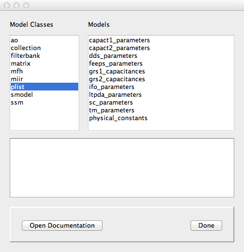

| LTPDA Toolbox™ | contents | |
The LTPDA Toolbox supports built-in models to ease construction of standard objects such as ao, ssm, plist, collection (see Models). For each of these classes, the list of available models can be accessed by typing:
>> (class).getBuiltInModels
A graphical user interface allows the user to easily explore this list and access the model documentation. To start the GUI:
>> LTPDAModelBrowser
You should then be presented with the following figure:
The tool allows to retrieve informations about the supported windows, and to plot them either in time-domain or frequency domain. A constructor line of code is also shown allowing the user to reproduce the window itself.
| |
The Spectral Window GUI | Working with an LTPDA Repository | |
©LTP Team